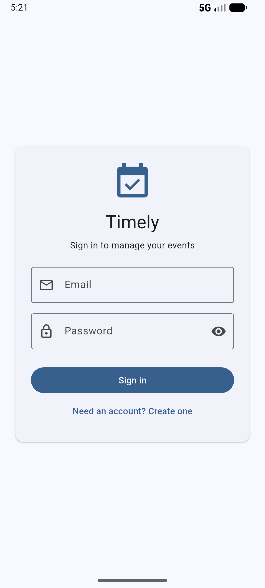
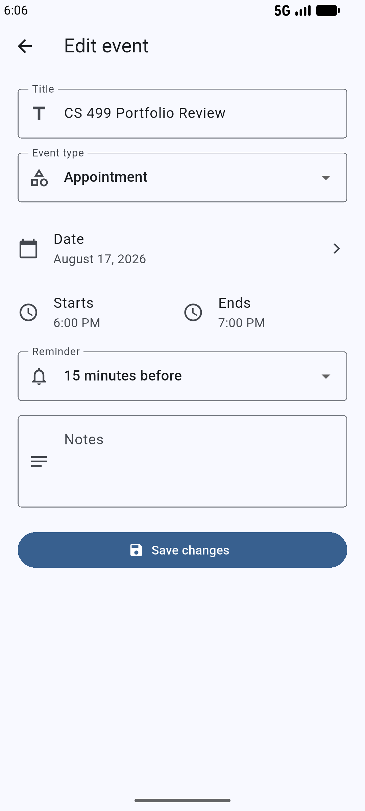
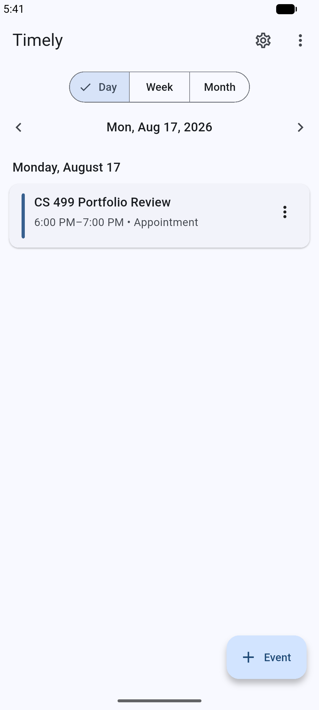

Artifact description
From an Android assignment to a modern mobile product
I originally created Timely in Android Studio using Java during CS 360: Mobile Architecture and Programming. The application helps professionals, students, and other users organize events, meetings, and appointments. Its original version included registration and login, an event-management interface, and separate SQLite databases for user accounts and event information.
I selected Timely because it demonstrates the complete process of turning user requirements into a working mobile application. The artifact showcases user-interface design, mobile development, database integration, data validation, software security, and modular programming through features such as authentication, event storage, updates, and reminders.
What changed
A broader platform with a stronger foundation
The most substantial enhancement was rewriting the application with Flutter and Dart. The original version was limited to Android; the enhanced shared codebase can support Android and iOS while improving organization, maintainability, and reuse.
Secure authentication
Password hashing replaces plain-text storage, while account-specific event access separates each user’s information.
Reliable data
Improved validation blocks incomplete or invalid submissions, and database migrations preserve information as the schema evolves.
Modular architecture
Authentication, event management, validation, storage, and interface concerns are organized into clearer reusable components.
Automated verification
Unit and database instrumentation tests cover account creation, authentication, event behavior, and database operations.
Functional evidence
The enhanced Flutter workflow in action



Course outcome coverage
Design decisions supported by professional practices
Course Outcome Three
I evaluated the limitations of the original Android application and redesigned it as a cross-platform solution. This required managing the trade-off between separate native applications and a shared Flutter codebase. The solution applies modular design, separation of concerns, validation, secure credential storage, database management, and automated testing.
Course Outcome Four
I used Flutter, Dart, database migration techniques, password hashing, and automated testing to create a more secure, maintainable, and accessible application. These technologies deliver value by expanding platform support, protecting account information, and improving the reliability of stored data.
Reflection
Learning through redesign
A thorough code review revealed inefficient code, limited security controls, and opportunities to improve the application structure. Returning to the project with a fresh perspective strengthened my understanding of why peer and professional code reviews are valuable.
The primary challenge was translating an Android/Java application into Flutter and Dart. Although the functionality remained similar, the widget system, state-management approach, database interactions, and project structure were different. Updating the database without losing user or event information also required careful migration planning and testing.
Overall, the enhancement strengthened my skills in mobile development, secure coding, testing, database management, cross-platform design, and code evaluation. It demonstrated how an existing application can be substantially improved through careful review, modern tools, and established software-engineering practices.
Original + enhanced